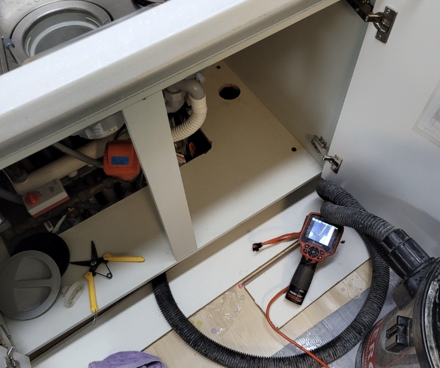
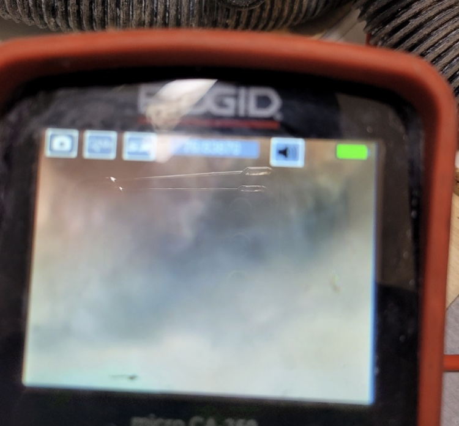
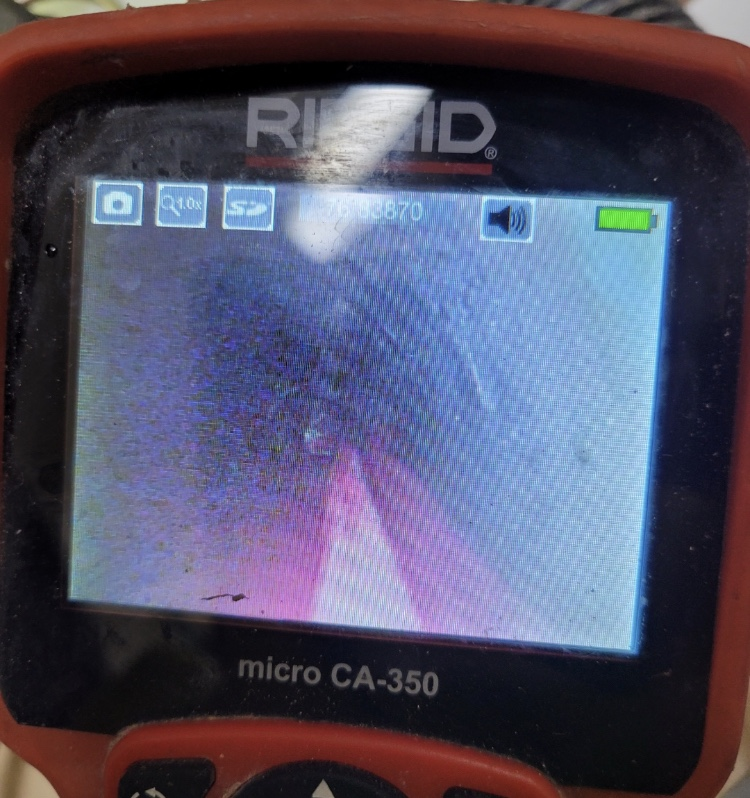
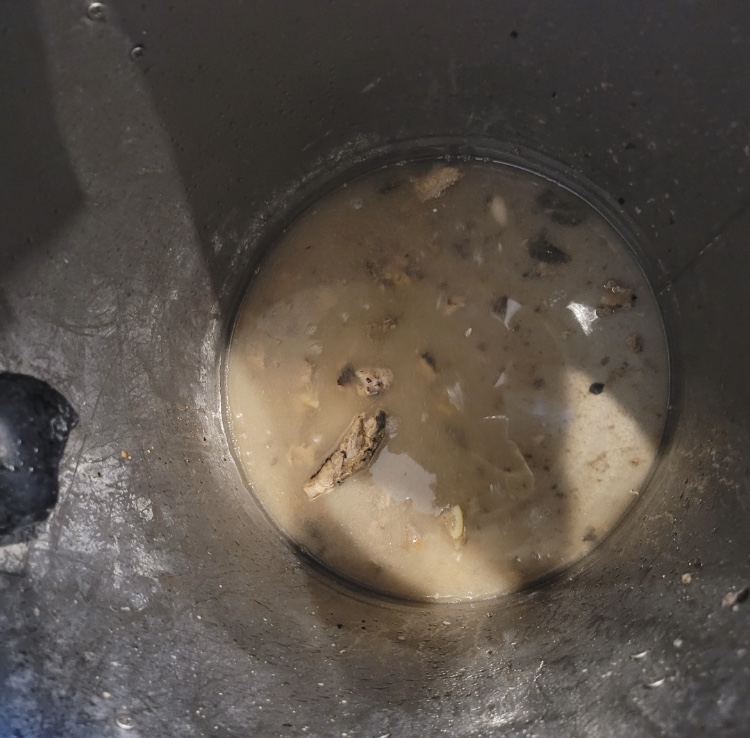
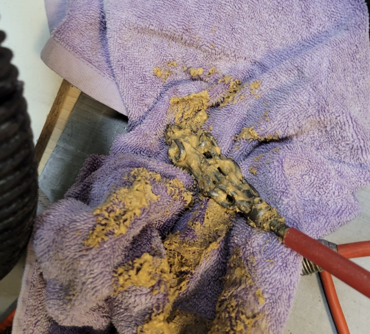
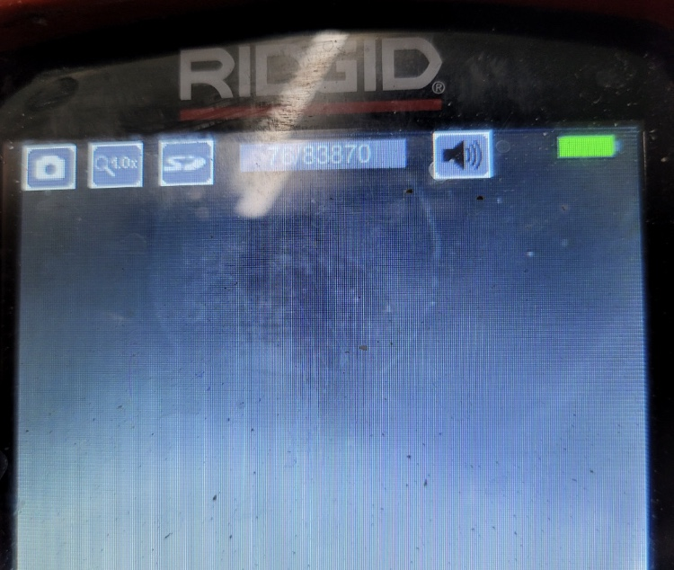

🏠 동탄하수구막힘은 신속한 업체에 맡기세요
화성 싱크대막힘 전문 시공 후기

📋 작업 개요
- 위치: 화성
- 서비스 유형: 싱크대막힘, 하수구막힘, 배관막힘, 누수수리, 뚫는업체
- 작업 일시: 2022. 2. 11. 4:35
- 업체명: 하수구수사대 (010-5615-2118)
🔍 문제 상황
동탄하수구막힘은 동탄하수구막힘에서
안녕하세요
"하수구 수사대" 입니다
가정집에서 매일 사용하고 사용하는 것이 하수구
라고 할 수 있을 정도로 하수구가막히게 된다면
많은 불편함이 생기기 마련이라 할 수 있는데요
일상생활에 큰 불편함을 줄 수 있기 때문인지
많은분들께서는 Self로 해결을 빠르게 하시려 합니다
하지만 , 하수구가 막혔다고 해서 직접 해결하시려고
한다면 얼마안가 다시 막히거나 누수현상이 일어날 수
있기 때문에 항상 전문가에게 의뢰하는걸 추천드려요
동탄하수구막힘 "하수구 막힘"
동탄 하수구막힘에서
보통은 하수구가 막혀서 Self로 해결을 하시려하면

🔎 원인 분석
💡 전문가 진단: 슬러지와 이물질이 통로를 꽉 막고 있어 배수가 불가능하며, 정밀 타격 및 배관 세척이 동반되어야 해결 가능합니다.
직접 뜨거운 물을 부으시거나 , 펑크린이나 뚜러펑 등
배관세정제를 넣어서 해결하려 한다던가 또는 철물점에서 판매하는 수동스프링을 사용해 뚫으려하는데요
물론 해결이 가끔 되기도 하는 경우가 있긴 있지만
보통은 쉽지 않을거라고 생각이 됩니다 🥲
그래서 서울/경기/인천 (수도권전지역)전지역
출장이 가능하고 주말,공휴일도 출장이 가능한 곳이
언제 어느때나 연락하기 좋기때문에
이런 모든 점이 가능한
동탄하수구막힘 전문 업체인 '하수구막힘'으로
연락 한통만 주신다면 언제 어디서나 방문하겠습니다
내시경카메라
항상 최첨단 장비를 보유해 최첨단 장비와
오래된 노하우와 실력으로 작업하는 저희
동탄하수구막힘 업체 '하수구 막힘'에서는

🔧 작업 과정
싱크대 하수구에서 특히나 신경써야 할 부분을
누수라고 생각하고 있는데요💧
싱크대밑에 바닥은 욕실처럼 방수가 되어 있지 않아
물이 새어들어갈수 있기 때문에 더욱 더 조심해야해요
그래서 저희 동탄하수구막힘 업체인 '하수구 막힘'
에서는 항상 작업을 할 때 내시경 카메라를 보면서
언제나 완벽하게 작업하는 것을 추구하고 있습니다
뿐만 아니라 , 아파트 하수구의 구배가 이상하여
기름이 쌓이고 쌓인 곳은 기름기를 완전하게 제거해
주시는 것이 매우 좋은데요 이 부분도 동탄하수구막힘 업체에선 내시경 카메라와 함께 작업을 하고 있습니다
이렇게 동탄하수구막힘 업체인 '하수구 막힘'에서
하수구배관에 기름덩어리들이 모두 제거 되었다면
관리가 매우매우 중요한 부분이라 할 수 있는데요
관리를 잘 못하게 된다면 다시 막힐 가능성이 있기
때문에 내시경카메라로 배관길이와 구조를 파악
하고 어떻게 관리를 해야하는지 계획을 세워야
히는 것도 관리를 해주는데 좋은 방법 입니다
오늘은 막힌 하수구에 대처하는 방법에 대해
알아보는 시간을 함께 가져보았는데요
저희 동탄하수구막힘 업체인 '하수구막힘'은
고객님의 편의를 위하여 빠른 해결을 돕기 위해
당일방문이 가능한 점 반드시 참고해주세요 ~!


✅ 작업 완료
또한 , 문제가 생길땐 작업 후 1년동안은 AS가
가능하기 때문에 언제든 연락주시면 감사하겠습니다
전화번호:010-2340-2118
경기도 화성시 노작로 147 601-B234호
#싱크대 #하수구 #하수구막힘 #하수구막힘업체
#싱크대막힘업체 #하수구막힘업체




⚠️ 베란다 누수 및 방수 관리 방법
- ✅ 비가 많이 올 때 창틀 주변이나 아래층 천장에 얼룩이 생기는지 정기적으로 확인해 보세요.
- ✅ 우수관 주변 실리콘 마감이 들뜨거나 깨진 틈새가 있는지 손상 여부를 수시로 체크하세요.
- ✅ 베란다 바닥 타일의 줄눈(메지)이 소실되면 그 틈으로 물이 침투하여 누수가 유발됩니다.
- ✅ 누수 의심 증상 발견 시 방치하면 아래층 손실이 커지므로 즉시 전문가의 진단을 받으십시오.
💡 핵심 정리
- 확실한 장비 작업(내시경 점검 및 샤프트 스케일링)으로 원인을 뿌리 뽑습니다.
- 작업 후 1년 이내에 동일한 부위 재발 시 100% 무상 A/S 서비스를 보장합니다.
- 서울 · 경기 · 인천 전 지역에 24시간 언제든 긴급 출동할 수 있도록 항시 대기 중입니다.
❓ 자주 묻는 질문 (FAQ)
🚨 화성 싱크대막힘 문제로 고민이신가요?
정확한 원인 진단과 확실한 시공으로 재발 없는 해결을 약속드립니다.
24시간 긴급 출동 | 서울 · 경기 · 인천 전지역 | 1년 내 재발 시 무상 A/S